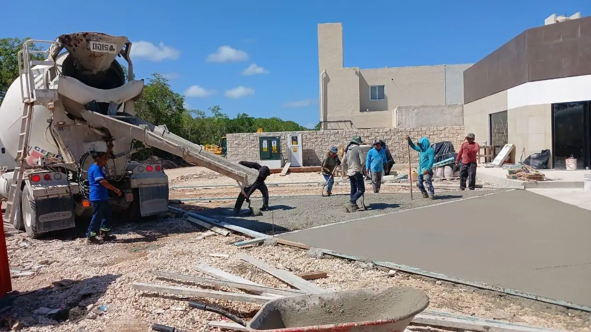

How Much Does a Retail Fit-Out Cost in Puerto Aventuras? (2026)
Prices to fit out a shop, boutique or café in Puerto Aventuras in 2026: cost per m² by level, examples for 40 and 80 m² units, remodel prices for existing stores and the shell checks that avoid surprises.

Related: Retail store fit-out in Puerto Aventuras · Retail store remodel in Puerto Aventuras · Cost to build a plaza in Puerto Aventuras · Retail fit-out cost in the Riviera Maya · Plazas & shopping centres
1. Fit-out cost per m² in Puerto Aventuras (2026)
| Level | MXN per m² | 40 m² unit | 80 m² unit |
|---|---|---|---|
| Basic retail: paint, lighting, flooring, counter, A/C | $6,100–$12,200 | $244,000–$488,000 | $488,000–$977,000 |
| Mid-range: joinery, display, storefront, signage | $12,200–$24,400 | $488,000–$977,000 | $977,000–$1,954,000 |
| Premium brand or jewellery | $24,400–$50,000 | $977,000–$1,998,000 | $1,954,000–$3,996,000 |
| Café or quick-service food | $20,000–$38,800 | $799,000–$1,554,000 | $1,598,000–$3,108,000 |
Storefront and signage add $100,000–$500,000 per unit.
2. Remodelling an existing store instead
| Scope | MXN per m² |
|---|---|
| Refresh: paint, lighting, minor finishes | $2,000–$5,000 |
| Full retail refit | $8,900–$20,000 |
| Change of use with structure and services | $20,000–$44,400 |
3. Hidden costs in the landlord’s shell
- Electrical capacity and a dedicated meter
- Drainage position, and a grease trap for food
- An extraction route to the roof for food
- Real ceiling height after ducts and lighting
- What you may change in the storefront
- Structure and waterproofing above the unit
Check them before signing and negotiate the shell or rent-free months against the list.
4. Retail streets and plazas in Puerto Aventuras
- The marina commercial area: waterfront restaurants, shops and services inside the community
- Highway 307 frontage serving Puerto Aventuras, Xpu-Há, Akumal and Chemuyil
- Small neighbourhood plazas for residents, staff housing and the resorts’ suppliers
5. Permits and timeline
Land use and the operating licence for your activity, the fit-out licence (DRO for structural or facade changes), Civil Protection before opening, health requirements for food and signage approval in Solidaridad. A retail fit-out takes 6–10 weeks once permits are in place.
Frequently asked questions
Ready to Start Your Project?
196+ completed projects. Fixed-price contracts. Free quote within 48 hours.
Get Free Quote